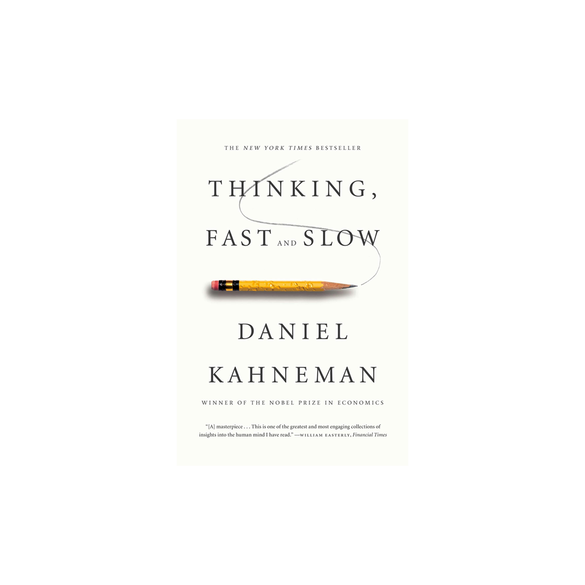
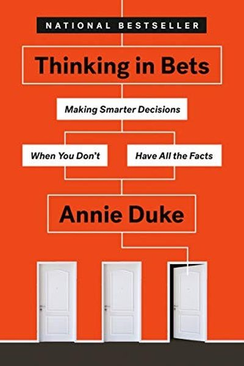

Library › Thinking, Fast and Slow vs Thinking in Bets
Thinking, Fast and Slow vs Thinking in Bets: Which Should You Actually Read?
Both books live on the same shelf: Psychology & People. Both are free to read here, in full, right now. Thinking, Fast and Slow (2011, Daniel Kahneman) argues: Your fast, intuitive System 1 runs your life; your slow, rational System 2 mostly just approves its … Thinking in Bets (2018, Annie Duke) argues: Every decision is a bet. Stop judging decisions by outcomes - judge them by the quality of the proce…

Thinking, Fast and Slow
Kahneman - the psychologist who won the economics Nobel - condenses five decades of research (much with Amos Tversky) into two characters: System 1 (fast, automatic, associative, effortless - and the origin of most beliefs) and System 2 (slow, deliberate, logi
READ THINKING, FAST AND SLOW FREE →
Thinking in Bets
Annie Duke, a World Series of Poker champion, argues that life is poker, not chess: every decision happens with incomplete information and luck plays a huge role. So judging a decision by its result is a fool's game - great decisions can lead to bad outcomes a
READ THINKING IN BETS FREE →⚖ The Straight Answer
Read Thinking, Fast and Slow if you want the nobel laureate's map of the mind's two systems - and the predictab
Read Thinking in Bets if you want how the world's best poker player makes smarter decisions in a world f
The honest order for most readers: start with Thinking in Bets for the base, then go deeper with the other. Both summaries are free, no paywall, in 26 languages.
Every summary is free: lessons, examples, action steps, audio in your language.